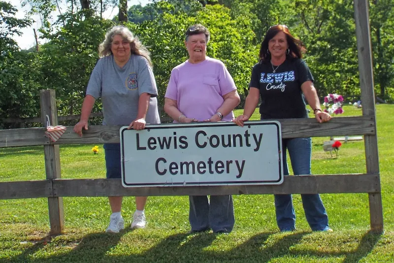
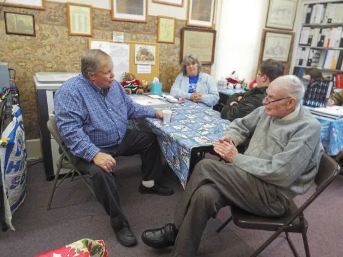
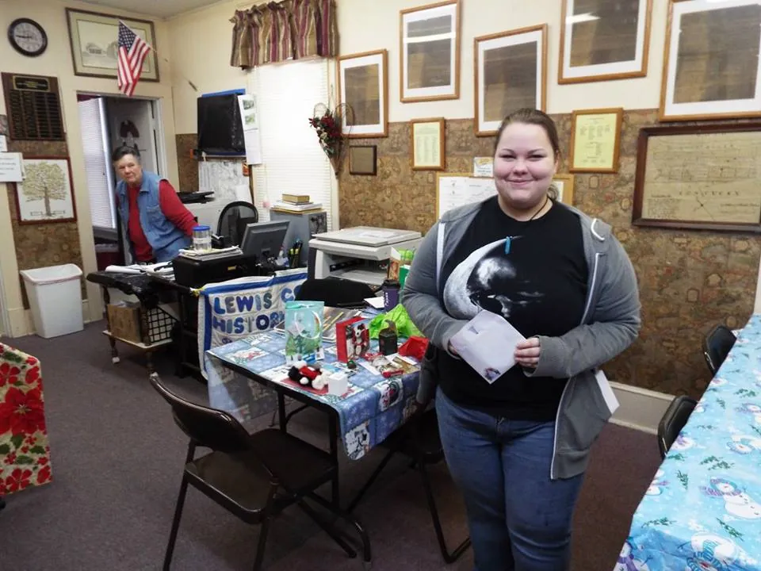

Run by volunteers since 1976
The Lewis County Historical Society in Kentucky was founded in 1976. It is a non-profit organization, managed by a staff of volunteers: their way of giving back to the community and preserving its history for future generations.
The society receives no federal funding. The money that keeps the doors open comes from memberships, book sales, donations and whatever fund raisers the volunteers can do from time to time.

The people behind it
Many people have had a hand in making the society what it is today since 1976. The society thanks all its past and present volunteers and members.


$15a year
Membership
- Reduced cost of copies
- The quarterly newsletter, Shakin' & Diggin'
- The research fee is waived
Research queries
The society accepts queries, and they are posted in the quarterly newsletter, Shakin' & Diggin'. Please direct all queries to Janey Clark: janeyclark@windstream.net.
Officers, 2020–2021
- Wanda Strong President
- Karen Squires Vice President
- Janey Clark Treasurer
- George Plummer Secretary
As listed on the society's website.